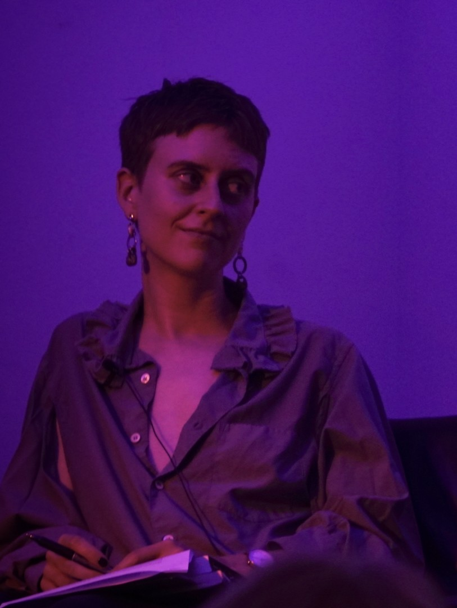

Char Hilgers is the Coordinator of the Social Cohesion Panel at the Socio-Economic Panel in Berlin. The Social Cohesion Panel is a probability-based longitudinal study jointly run by the Socio-Economic Panel and the Research Institute Social Cohesion in Bremen.
Char's research is on statistical techniques for nonresponse in survey settings: when missingness means something. From multiple imputation for handling missing not at random, to the data integration of probability and non-probability surveys. They are interested in refusal, misdirection, and obfuscation in survey settings, and ethical dilemmas around these. They hold a Master's in Industrial and Applied Mathematics and a Bachelor's in Pure Mathematics, and they have worked as a data scientist in forest monitoring, epidemiology, and supply chain forecasting.
